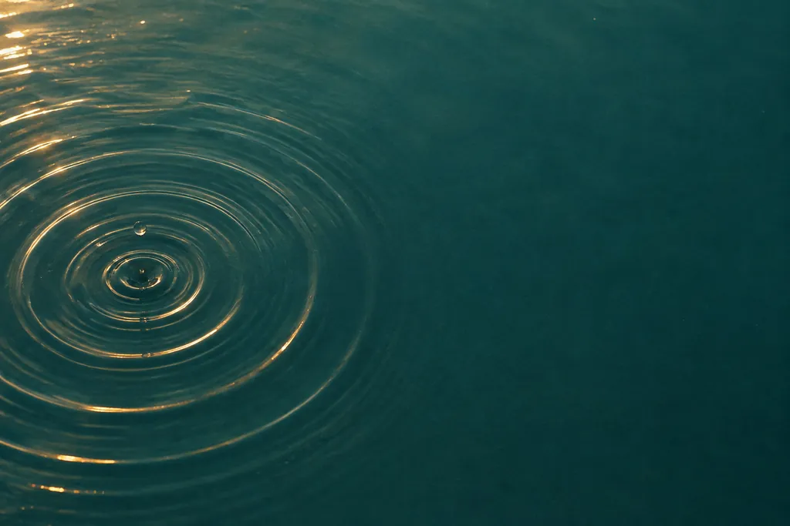
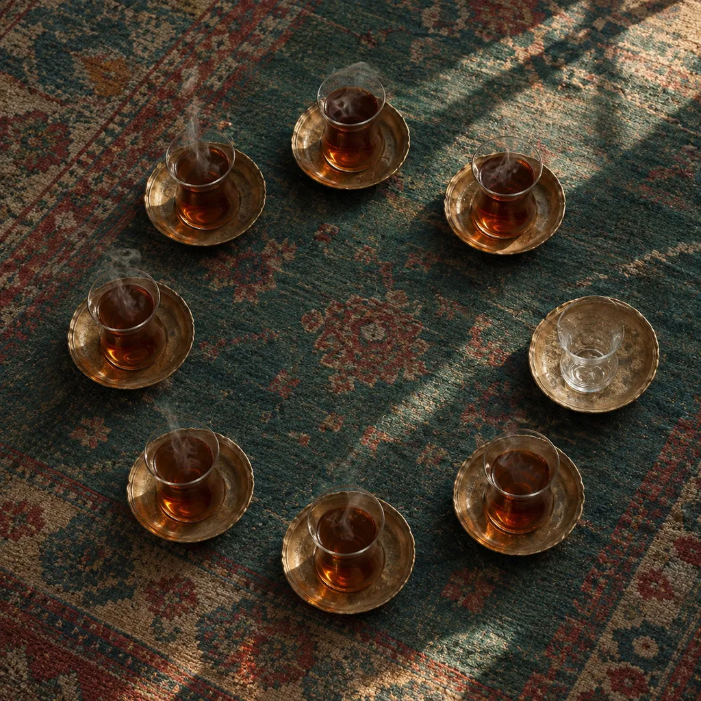
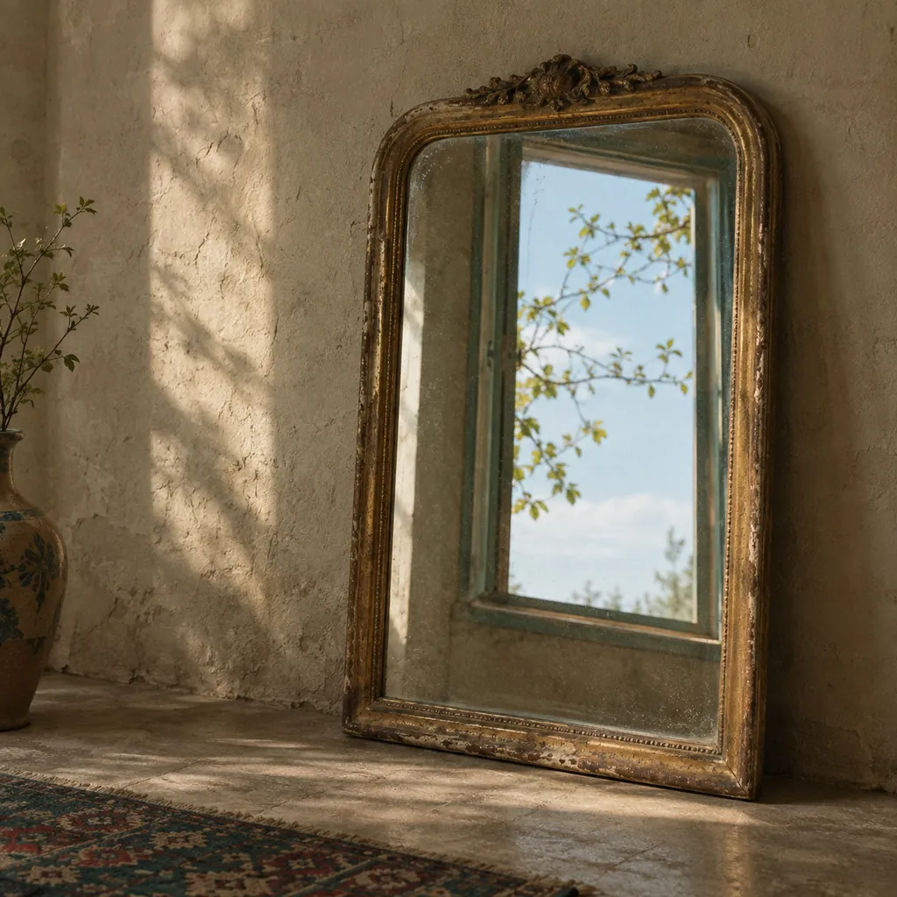
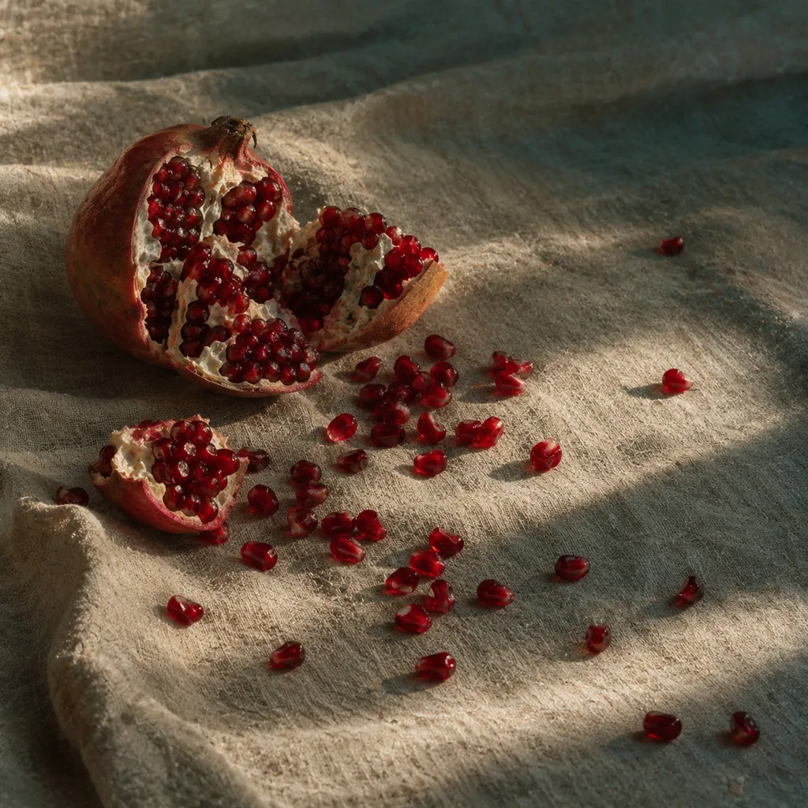
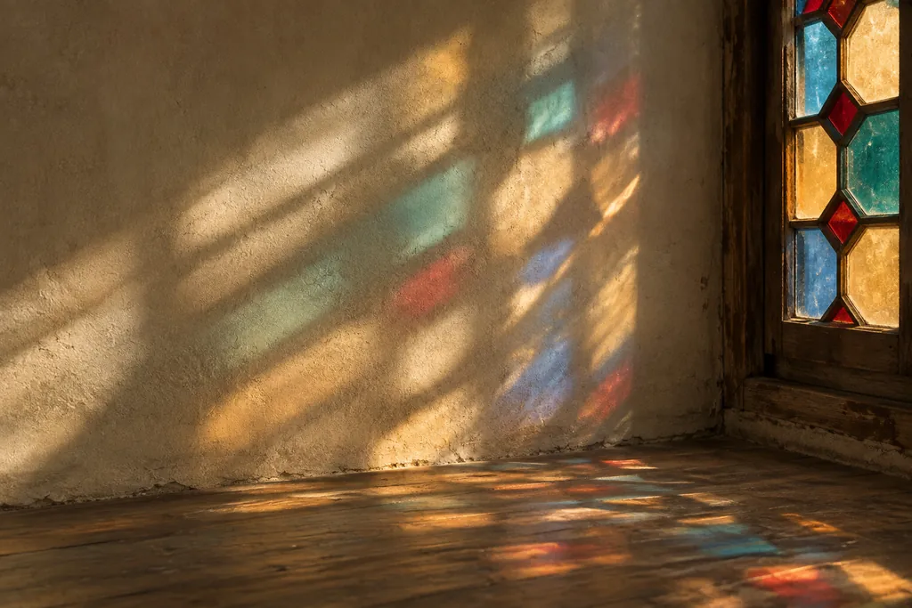
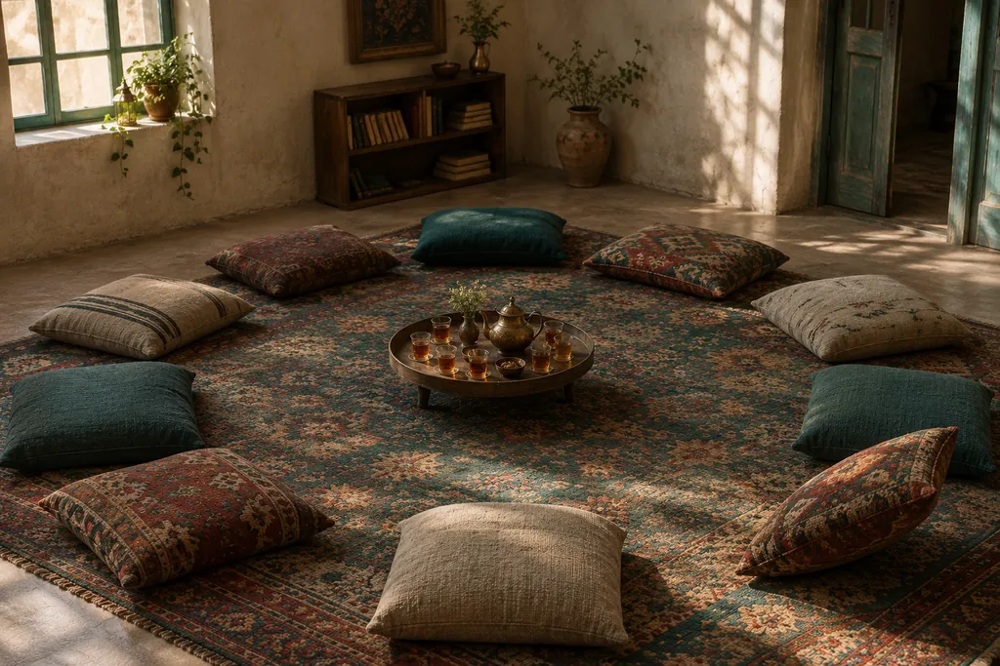
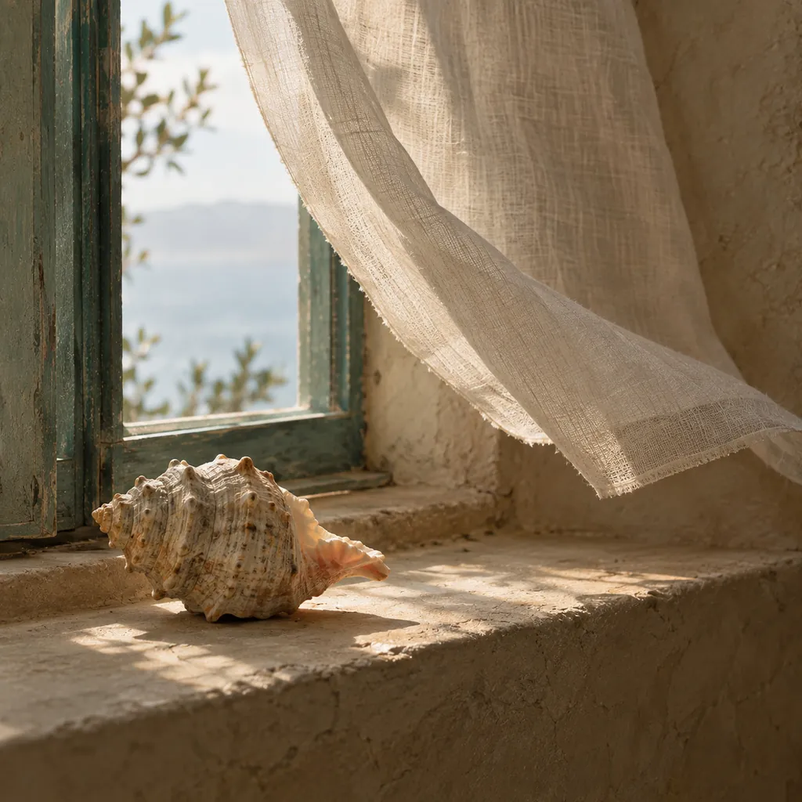
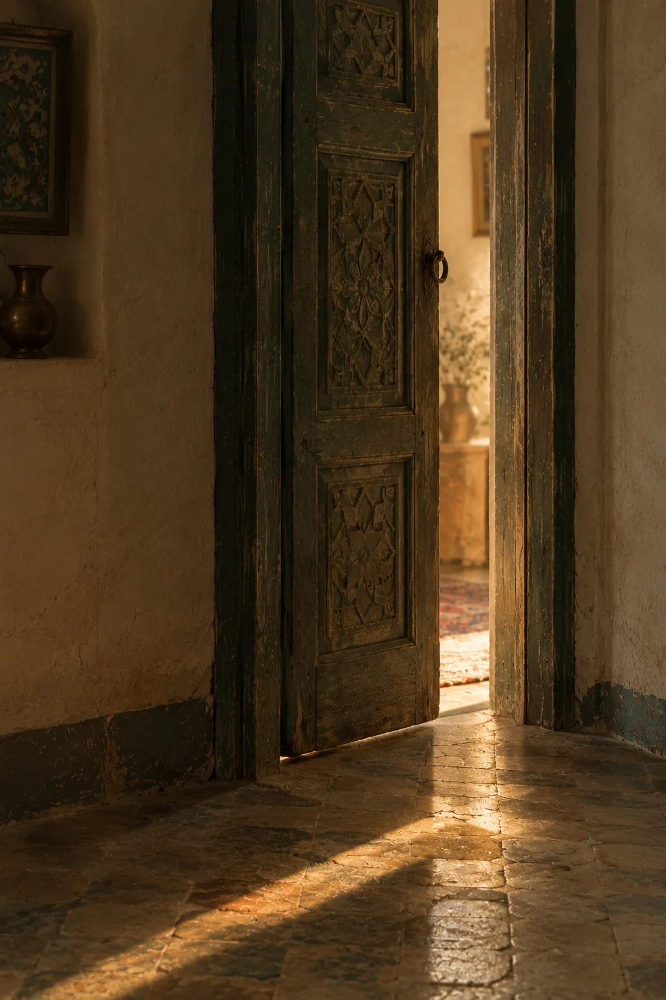
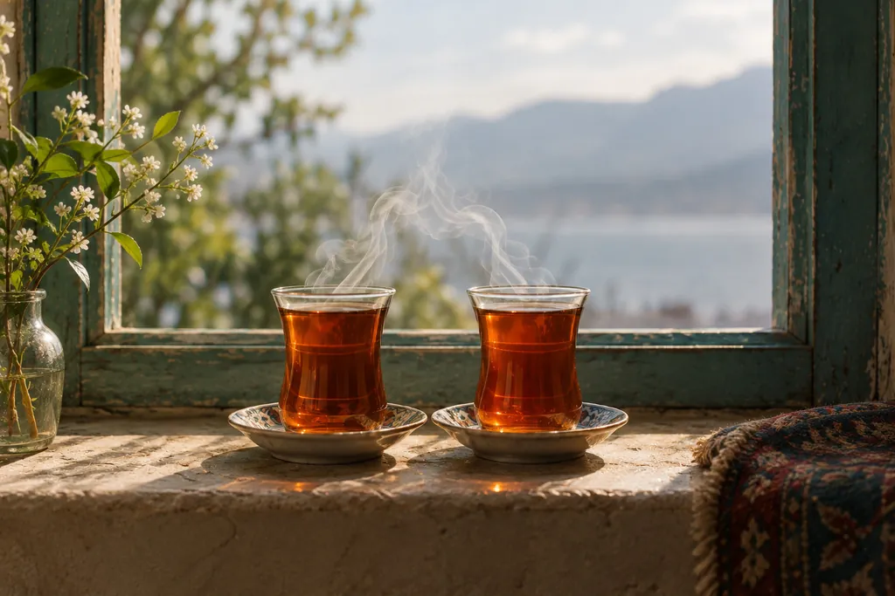

نگاخته
تغییر از خودمون شروع میشه.
کار اصلی ما گروهدرمانیه، حضوری و آنلاین. اینجا قرار نیست فوری ثبتنام کنی؛ اینجا جاییه برای فهمیدن. ببین گروهدرمانی چیه، تو یه جلسه واقعاً چی میگذره، و اگه به دلت نشست، از کجا شروع کنی.
ما چی کار میکنیم
نگاخته یه خانوادهست، نه یه مطب.
چند تا کار مختلف میکنیم و همه رو یه جا نگه داشتیم. ولی اگه قرار باشه اسم خودمونو روی یکیش بذاریم، همین اولیه.

کارِ اصلی
گروهدرمانی
گروههای کوچیکی که هر هفته با یه درمانگر دور هم میشینن و حرف میزنن؛ بعضیا حضوری، بعضیا آنلاین. چیزی که تو گروه اتفاق میافته تو درمان فردی نمیافته: میبینی تنها نیستی، و میبینی رفتارت با بقیه همون لحظه چه اثری داره.
بیشتر بخون
آزمونهای خودشناسی
هفت تا آزمون بر پایهی چارچوبهای شناختهشدهی روانشناسی؛ رایگان و بدون ثبتنام.

کارهای عامالمنفعه
[جای متن] چی کار میکنید، برای کیا، و چطور میشه همراه شد.
سایر فعالیتها
[جای متن] هر کار دیگهای که باید تو این نقشه دیده بشه. یه عنوان و دو خط توضیح کافیه.
گروهدرمانی
تو گروه، چیزی رو میبینی که تو آینه نمیبینی.

تو درمان فردی از رابطههات تعریف میکنی. تو گروه، رابطهها همونجا ساخته میشن؛ با شش تا ده نفر که تا دیروز نمیشناختیشون. همون الگویی که بیرون تکرار میکنی اینجا هم پیدا میشه، با این فرق که این بار یکی هست که بهت بگه داره اتفاق میافته.
و یه چیز سادهتر: میشنوی یکی دیگه دقیقاً همون جملهای رو میگه که فکر میکردی فقط تو سر خودته.
حضوری یا آنلاین؟
هر دوش رو داریم و هیچکدوم نسخهی ناقص اون یکی نیست.
حضوری: بودن تو یه اتاق با آدمها چیزی داره که دوربین نمیده.
آنلاین: از هر شهری، بدون رفتوآمد، و برای خیلیا قدم اول راحتتریه. پژوهشها نشون میدن اثرش نزدیک به حضوریه.
شفافیت
تو یه جلسه چی میگذره؟
هیچکس پا تو اتاقی نمیذاره که نمیتونه تصورش کنه. پس دقیق میگیم.

- اندازهی گروه
- ۶ تا ۱۰ نفر
- هر جلسه
- حدود ۹۰ دقیقه
- چند وقت یه بار
- هفتهای یه بار
- درمانگر
- تو همهی جلسهها هست
شروع
گروه میشینه و درمانگر جلسه رو باز میکنه. هیچکس تکلیف نداره و نوبت اجباری هم در کار نیست.
وسط
هر کی هر چی آورده میذاره وسط. بقیه واکنش نشون میدن؛ نه نصیحت، بلکه اینکه اون حرف باهاشون چی کار کرد.
آخر
جلسه بسته میشه. هر چی گفته شد تو همون اتاق میمونه؛ این تنها قانونیه که سرش شوخی نداریم.

لازم نیست حرف بزنی
رایجترین ترس همینه و سادهترین جواب رو داره: خیلیا چند جلسهی اول فقط گوش میدن. گوش دادن هم بخشی از کاره، نه غیبت ازش. هر وقت خواستی، حرف میزنی.
قبل از اینکه بپرسی
نگرانیهای رایج
اینا رو از کسایی شنیدیم که قبل از اومدن پرسیدن. اگه نگرانی تو اینجا نیست، بپرس.

اگه اونجا کسی رو بشناسم چی؟
قبل از اومدن، یه گفتوگوی جدا با درمانگر داری. یکی از کارای همون گفتوگو همینه: اگه احتمال آشنایی باشه، یه گروه دیگه برات در نظر گرفته میشه.
حرفام کجا میره؟
هیچجا. جلسهها ضبط نمیشن و همهی اعضا اول کار سر رازداری توافق میکنن. این فقط یه عرف اخلاقی نیست؛ شرط عضویته.
اگه گریهم بگیره چی؟
پیش میاد، برای خیلیا، و هیچکس اونو یه اتفاق عجیب نمیبینه. اتاقی که توش نتونی گریه کنی، اتاق درمان نیست.
تا کی باید ادامه بدم؟
گروهها یه دورهی مشخص دارن که قبل از شروع بهت گفته میشه. تعهد بیپایان از کسی نمیخوایم؛ ولی چند جلسهی اول رو میخوایم، چون یه گروه تو جلسهی اول شکل نمیگیره.
آنلاین هم همونقدر اثر داره؟
نزدیک بهش. یه چیزی از بودن تو یه اتاق کم میشه و یه چیزی اضافه: از خونهی خودت، بدون رفتوآمد، و برای خیلیا با ترس کمتری برای شروع.
گروهدرمانی جای درمان فردی رو میگیره؟
نه همیشه. برای بعضیا کافیه، برای بعضیا کنار درمان فردی میشینه، و تو بعضی موقعیتها انتخاب درستی نیست. تو همون گفتوگوی اول رک بهت میگیم.
آزمونهای خودشناسی
اگه نمیدونی از کجا شروع کنی، از خودت شروع کن.
هفت تا آزمون بر پایهی چارچوبهای شناختهشدهی روانشناسی: کهنالگوها، سبک دلبستگی، MBTI، DISC، زبانهای عشق و قطبنمای سیاسی. نتیجه رو همون لحظه میبینی.
بدون ثبتنام. جوابهات فقط تو مرورگر خودت میمونه و هیچجا فرستاده نمیشه. اینا ابزار خودشناسیان، نه تشخیص.
آزمونها رو ببینچه ربطی به گروه داره؟
خیلیا نمیدونن برای چی میخوان بیان. یه آزمون جواب آخر نیست، ولی به چیزی که حس میکنی یه اسم میده؛ و با یه اسم، گفتوگوی اول راحتتر شروع میشه.
از کجا شروع کنم
سه قدم، و قدم اولش فقط یه گفتوگوئه.
گفتوگوی اول
یه جلسهی کوتاه با درمانگر، بدون تعهد. میگی چی میخوای و هر چی خواستی میپرسی.
انتخاب گروه
بر اساس همون گفتوگو، گروهی پیشنهاد میشه که بهت بخوره؛ حضوری یا آنلاین.
جلسهی اول
میشینی و گوش میدی. همین. هیچکس تو جلسهی اول ازت چیزی نمیخواد.
کی گروه رو میگردونه
قبل از اینکه به یه گروه اعتماد کنی، به یه آدم اعتماد میکنی.
برای همین این بخش نمیتونه کلی باشه: اسم، تحصیلات، پروانه، و اینکه چند ساله گروه میگردونه.
درمانگر
[جای متن] نام، مدرک و رشته، شمارهی پروانه، سابقهی کار با گروه، و دو خط به زبون خودش. یه عکس ساده هم بذارید؛ تو این صفحه از هر تصویر دیگهای بیشتر کار میکنه.
همکاران
[جای متن] اگه گروهها رو بیشتر از یه نفر میگردونن، همین قالب برای هر کدوم تکرار میشه.
تماس
پرسیدن، تعهد نمیاره.
میتونی فقط بپرسی و بری. لازم نیست بدونی چی میخوای تا بتونی سؤال کنی.
راههای تماس
[جای متن] شمارهی واتساپ یا تلگرام، ایمیل، و اگه گروه حضوری دارید، شهر و محله. تا شمارهای که واقعاً جواب میده رو نگیرم، اینجا چیزی نمیذارم.
